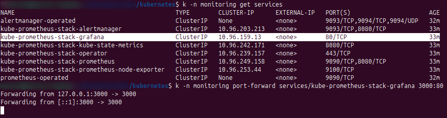
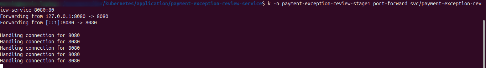

Real troubleshooting stories.
Each page below turns a runbook into a presentation-friendly narrative: symptom, diagnosis, evidence, and durable fix.



Scenario library
The point is not to collect random failures. It is to show disciplined debugging on realistic infrastructure, platform, and observability issues.
Helm timeout
Differentiate a slow local startup from a genuinely blocked release.
Open scenarioPrometheus query contract
Show that an API validation error can come from the request shape, not the platform itself.
Open scenarioGrafana localhost mismatch
Separate workstation port-forward assumptions from in-cluster service resolution.
Open scenarioGrafana PVC permissions
Turn a repeated local failure into a cleaner environment design.
Open scenarioNo-data dashboard panel
Prove that empty telemetry can be a traffic and label-filter issue, not a broken stack.
Open scenarioGrafana v2 schema mismatch
Show the difference between a healthy provisioning path and the wrong dashboard export format.
Open scenario